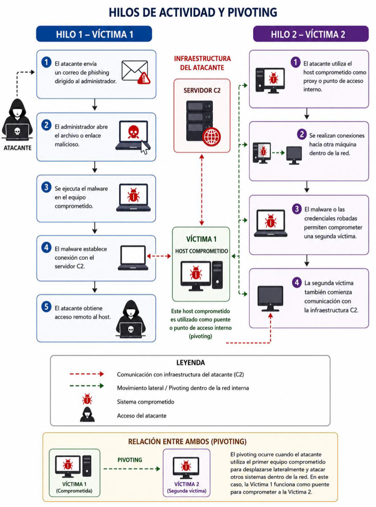

Actividad 18: Análisis de Intrusiones con el Modelo Diamante
Documento formal de la práctica (PDF):
Descargar Artículo1. Introducción Contextual
El rastreo de incidentes informáticos exige marcos analíticos capaces de estructurar la correlación de eventos. El Modelo Diamante de Análisis de Intrusiones mapea la actividad maliciosa vinculando de forma dinámica cuatro nodos esenciales interconectados: Adversario, Capacidad, Infraestructura y Víctima. Cruzar esta metodología con la secuencia táctica de la Cyber Kill Chain provee visibilidad integral del compromiso lógicamente estructurado de una red.
2. Desarrollo Técnico
Se analizó un incidente forense donde un host interno manifestó un comportamiento anómalo tras la ejecución de código dañino. Los componentes identificados dentro del esquema lógico del diamante se distribuyeron bajo las siguientes características de eventos:
- Adversario: Atacante externo o sindicato cibercriminal rastreado mediante análisis WHOIS de registros y geolocalización IP.
- Capacidad: Malware avanzado configurado para realizar resoluciones DNS forzadas y habilitar llamadas remotas de ejecución.
- Infraestructura: Nombres de dominio externos vinculados a servidores persistentes de Comando y Control (C2).
- Víctima Primaria: Host corporativo perteneciente al administrador de la infraestructura interna de la organización.
El análisis de red detectó la fase de Comando y Control mediante la salida recurrente de paquetes de datos hacia direcciones externas. Asimismo, la persistencia de logs de hosts paralelos conectándose a las mismas IPs evidenció técnicas activas de Movimiento Lateral (Pivoting), empleando el primer dispositivo comprometido (Víctima 1) como puente de salto técnico hacia nuevos segmentos de la organización (Víctima 2).
3. Material Multimedia
A continuación se integra el esquema visual que detalla la interconexión del Modelo Diamante y los mapas de hilos de actividad del Pivoting dentro de la red interna:

Figura 18.1: Hilos de actividad táctica demostrando el puenteo interno de la red.
4. Opinión y Reflexión Técnica
Como estudiantes de ingeniería, el análisis lúdico con el Framework del Diamante y la Kill Chain nos enseña que un incidente de intrusión nunca es un hecho aislado. Entender la infraestructura externa C2 del adversario y mapear cómo mutan sus capacidades ofensivas dota al equipo de Blue Team de la inteligencia de amenazas (*Threat Intelligence*) necesaria para cortar la cadena de ejecución antes del compromiso total. El monitoreo y aislamiento rápido de endpoints infectados corta los hilos de pivoting y preserva la integridad corporativa.
5. Referencias Técnicas
- Center for Cyber Intelligence Analysis and Threat Research (CCIATR) - The Diamond Model for Intrusion Analysis.
- Lockheed Martin (2026). Cyber Kill Chain Framework for Information Operations.
- MITRE ATT&CK Framework - Technical Analysis for Pivoting and Lateral Movement (T1090).